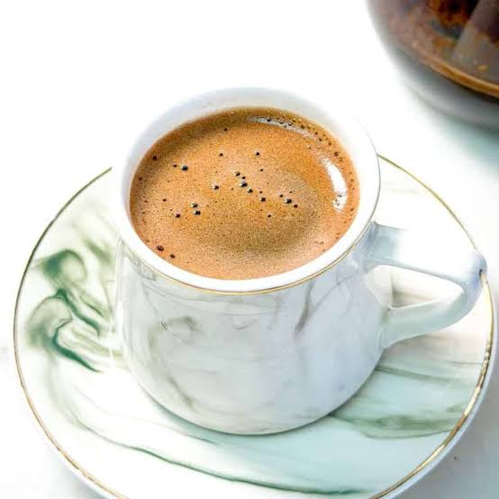
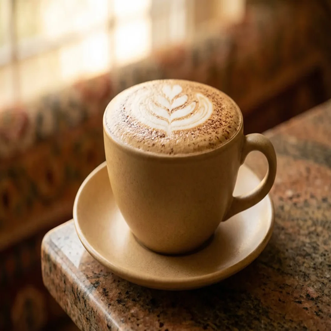
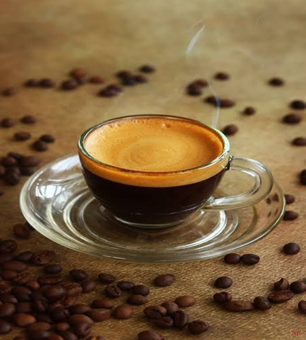

When you're looking for a rich, traditional caffeine boost, head over to the local café to get a Turkish coffee. It's strong, intensely aromatic, authentic, and deeply satisfying. It's made by finely grinding coffee beans and simmering them with water and sugar in a small copper pot called a cezve. Not in the mood for a heavy brew? Most spots also offer a lighter, filtered roast! (Though they don't call it 'Turkish coffee', they just call it a classic drip.)
Recommendation:Double shot with extra foam

A classic Italian coffee drink made with espresso, steamed milk, and a layer of foam on top. It's a perfect balance of strong coffee flavor and creamy texture.
Recommendation: Add a drizzle of caramel syrup

A strong, concentrated coffee drink made by forcing steam through ground coffee beans. It's the foundation for many popular coffee beverages and is known for its bold, intense flavor.
Recommendation: Try it with a splash of vanilla syrup

A refreshing cold coffee drink made with espresso, cold milk, and ice. It's perfect for hot days and can be customized with various flavors and sweeteners.
Recommendation: Add a shot of hazelnut syrup